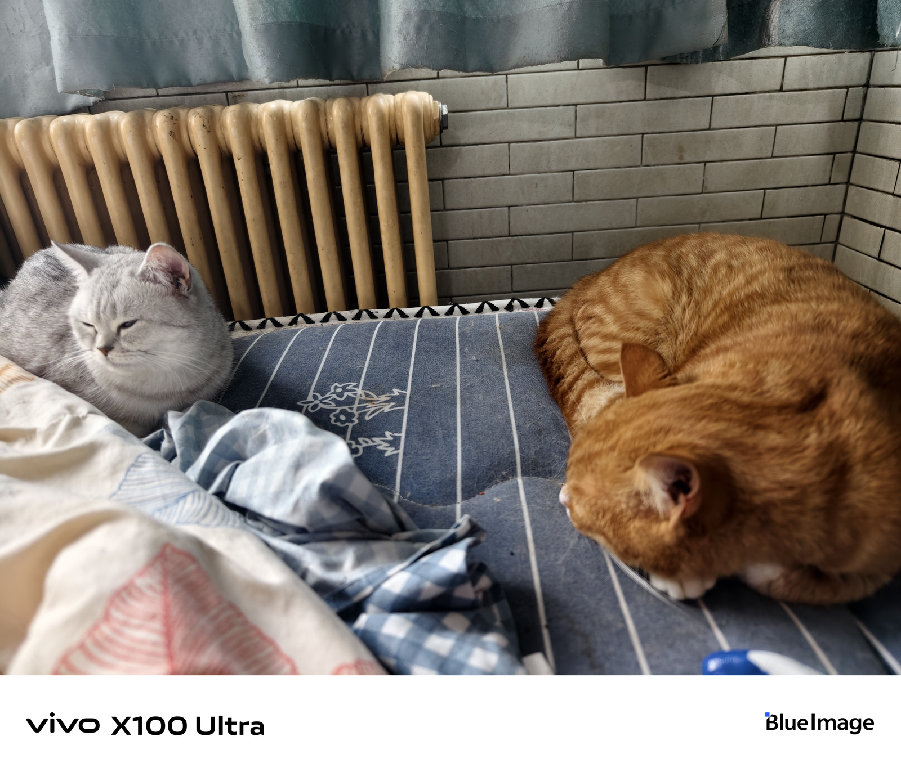

比金妙那套蓝色的好看[泪奔]
主播竟然用我的评论了，嘻嘻
孙颖莎都写了，下一个写谁不用提醒了吧（邱爸）
这两个写了 还有一个呢[疑问]
高育良从开始到最后都没正眼看过田国富！
田国富：沙瑞金这个同志我很不喜欢，逼死了一个公安厅厅长，送进去了一个省委副书记[看]这个同志很不好[看]
田国富真是一条老狐狸，见风使舵
城府最深的老狐狸，田国富。
我觉得煎字用的真的很好，有那么多种做菜的方法，烹啊，蒸啊，煮啊，烧啊，但煎字绝的地方在于就好像把他，把他的人生放在平底锅上，被火一点一点的灼烧，通过那口锅，把火带来的感觉赋于他的身上，他的生活上，一点一点又一点，慢慢的，灼烧着他，好难熬啊，感受到火在灼烧，炙烤他，又如何呢，只能感受着，然后所有的生机，所有的梦想抱负，生命里的水分，全都消失殆尽，变成干尸，变成枯骨
烹字太烈，熬字太苦，煮字太润，唯有这煎字让人心疼[流泪]
我对李贺不熟，但是李贺的雁门太守行中报君黄金台上意，提携玉龙为君死，就很意气风发，为何会最后发出不识青天高，黄地厚[流泪][流泪]来煎人寿好沉重
当初写出“报君黄金台上意，提携玉龙为君死”的人如今却“来煎人寿” 历史真的很神奇[憨笑]
他哭不是因为要去派出所，是有两三天不能玩手机才哭的。
入坑还是脑袋大时代，这么一看，脑袋大挺聪明
猫是猫，驴得水是驴得水，别整混了，都不是一个品种[抠鼻]
早知道小时候少吃辣条 然后好好保养手指了[憨笑]
这就是天选女同音吗
我说呢，没一个侄女能唱出来这种感觉[憨笑]
哈哈哈哈哈哈哈女同音 谁说的！真的很好听
中考能用双倍加分卡吗
和平精英玩家再不出来军需保底出[愉快]
和平精英国歌
听完脸上长这个[憨笑]
走咯
唯一三观正的奶奶挂墙上了
我看有个博主说这是破鞋之家[笑哭]
有人说这部剧应该叫《破鞋之家》vs《我的下半身》[噢买尬][噢买尬][噢买尬][噢买尬]
出轨的爸，偷情的妈，早恋的他，滥情的爷爷，挂墙上的奶奶，
一大家子就亲家母本分，就是嗓门有点大[捂脸][捂脸][捂脸]
这一家子人都很爱谈恋爱
等了两天以为终于发现了[憨笑]给我整这出
发现了就这出[微笑]
不是 他把爸回来就知道跟大母猫睡觉是吧
这两口子都在呢，看我怎么削他俩 
再不发现我不追了[流泪][流泪][流泪]真是的，都绑树上了还进屋睡觉呢[微笑]
爸爸也是个肺无[耶][给力]
Read more: